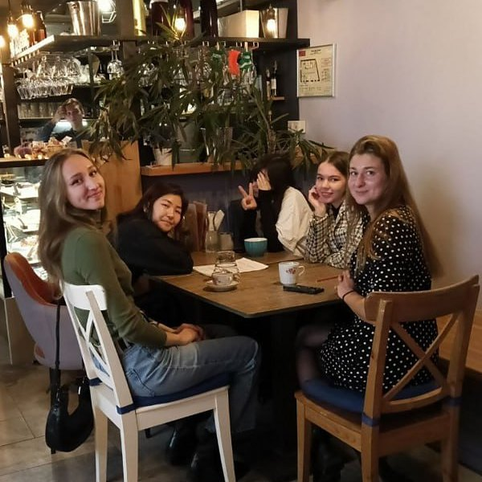
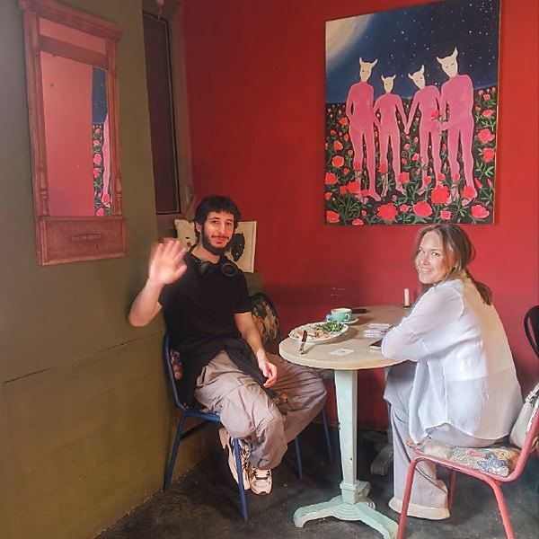
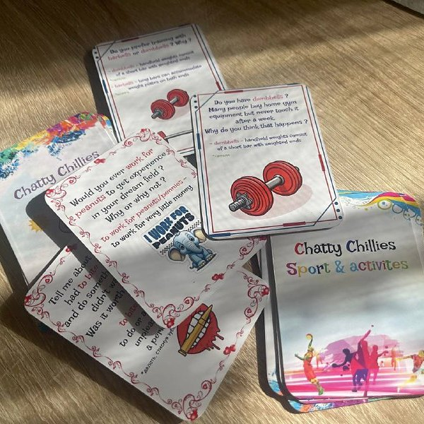
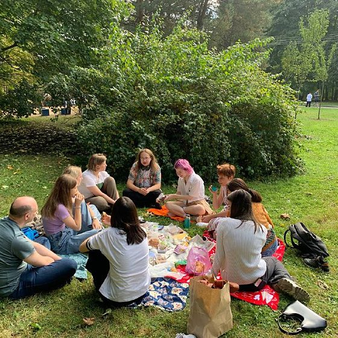
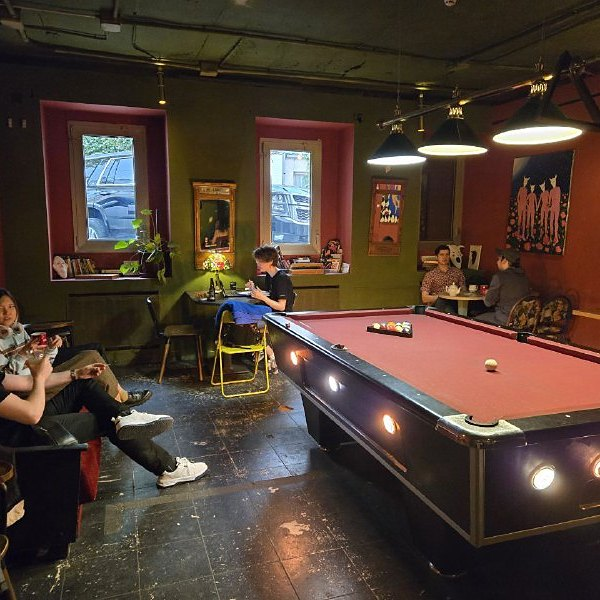
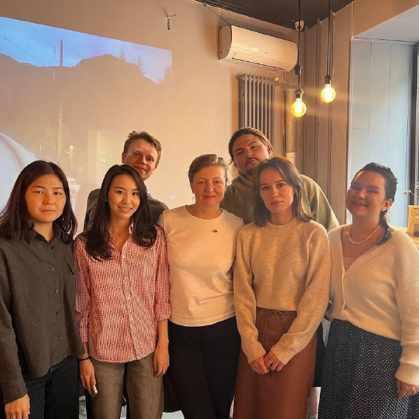
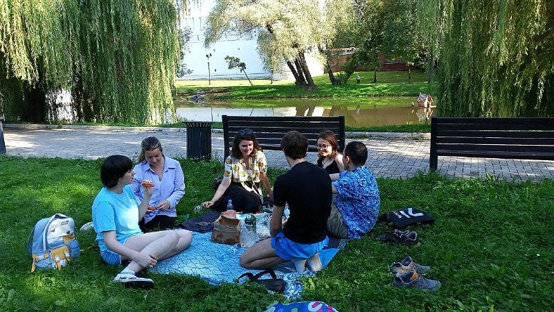

Meaningful conversations. Handy vocabulary. New friends. 🌶 Chatty Chillies (formerly Walk&Talk) is a weekly English speaking club that meets every Sunday afternoon over hot coffee.
Regulars, new faces and everyone in between — the club has grown into a small, lively community with over 600 subscribers. Rain or shine, the meetups go on: the conversations flow, the coffee is hot, and the vibes are just right. ☕️
Our Format
Format: a 2-hour meetup of up to 20 participants. Most of the time you talk in pairs, switching partners every round, and at the end everyone gathers at shared tables in groups of 4–5.
⏱ Session structure:
- Pair conversations — rounds of 15–20 minutes with a new partner each time
- Group talk at shared tables of 4–5 people at the end
- Sometimes a few rounds of Taboo and other speaking games
👥 Level: B1 and higher (up to C2). People speak briskly and without hesitation — if you're not sure about your level, just come and see if you feel comfortable.
💬 Vocabulary of the week: every Thursday the host publishes a list of words with translations and usage examples, and the questions for Sunday's meetup are built around these words. Look for them by the #vocabulary_day tag in the channel.
🃏 Question cards: the conversation topics come on the club's own printed cards, grouped into categories such as Sport & Activities, Phrasal Verbs and Idioms.






Where we meet
| Day | Venue | Address |
|---|---|---|
| Sunday, 16:00–18:00 | Stars Coffee | ul. Butyrsky Val, 10 (m. Belorusskaya) |
The venue sometimes changes — keep an eye on the announcements in the channel.
Over the years the club has moved between several cafés — Klubique on Sadovo-Karetnaya, Coffee Bean and others — before settling at Stars Coffee. In warm weather there have also been walks after the meetups and picnics, such as the summer picnic in Novodevichy Ponds Park. 🧺

Price
Sunday meetup: 350 ₽ + any order at Stars Coffee.
Registration
Sign up by messaging one of the hosts before the meetup.
- Hosts: Telegram @NatalyEnglish, @yourcosciousness
- Website: chattychillies.ru
- Club channel: @walkandtalkclub
- Reserve group: VKontakte
New faces are always welcome — come along and bring your stories! ✨